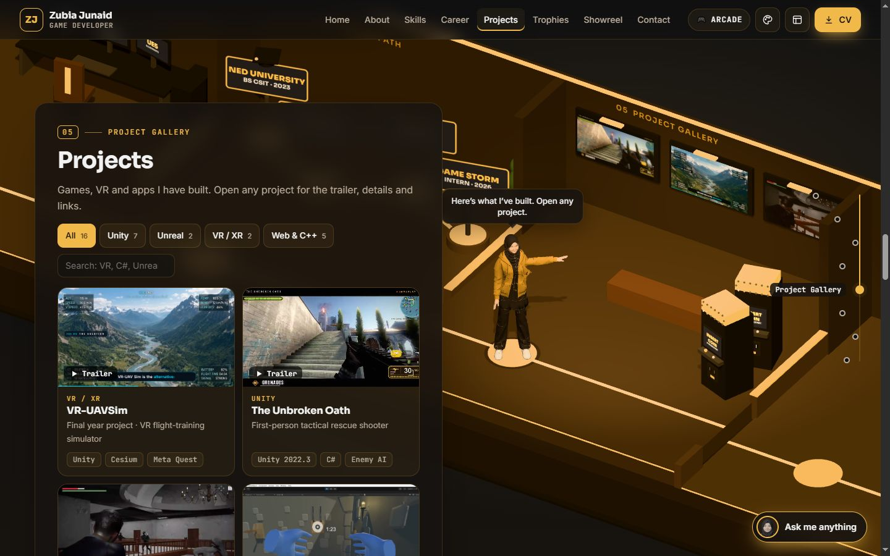
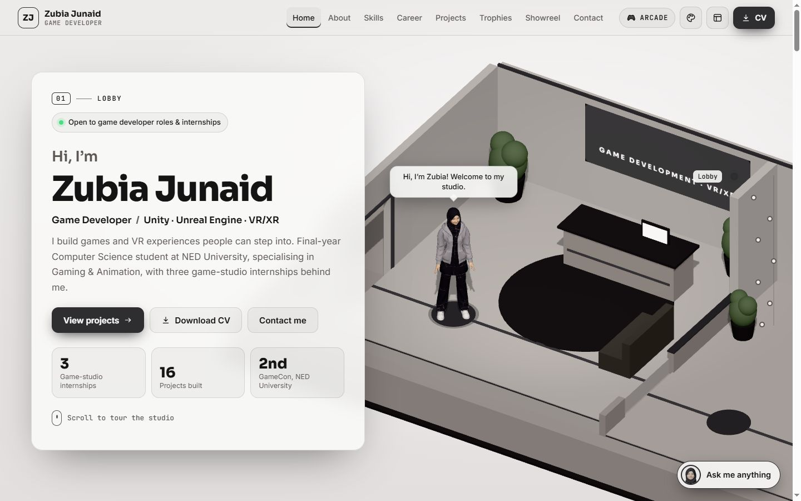
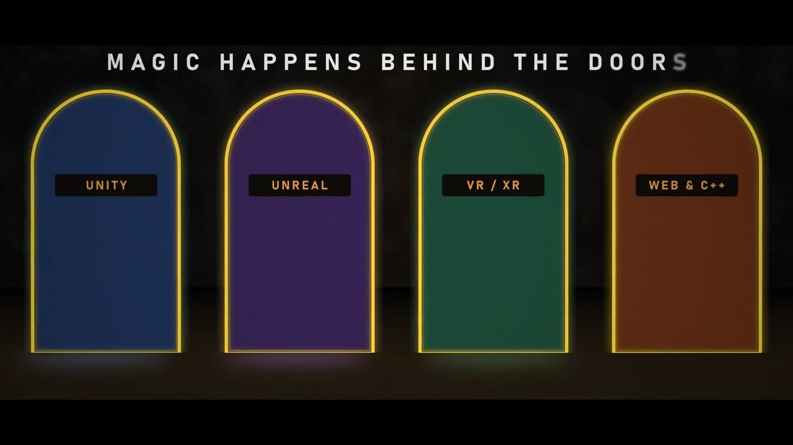
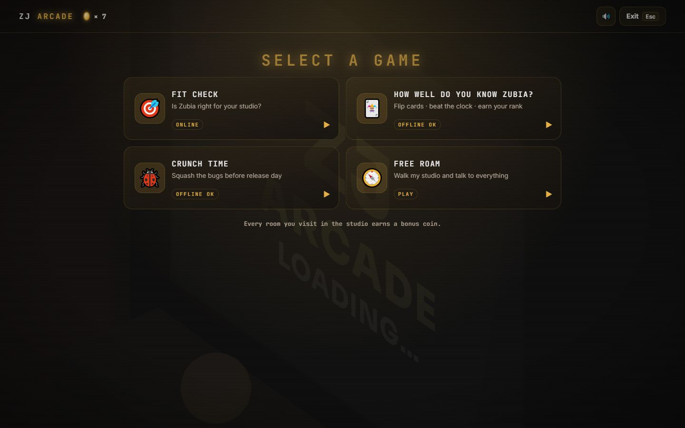
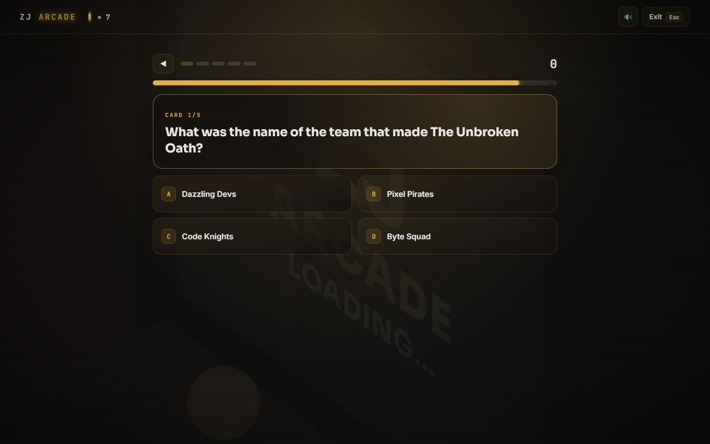

Abstract
This report describes the design and development of an interactive 3D web portfolio for a game developer. Instead of a conventional page of text, the portfolio is presented as a small isometric game studio rendered in the browser with Three.js. The visitor scrolls through eight rooms (lobby, about, skills, career, projects, achievements, showreel and contact), and a rigged 3D avatar of the author walks from room to room and introduces each section.
The project was completed in six modules. Module 1 builds the 3D website with React and React Three Fiber. Module 2 prepares, rigs and animates the avatar in Blender using Python scripts. Module 3 produces a 48-second promotional video in Adobe After Effects. Module 4 adds a chatbot that answers questions about the author using retrieval-augmented generation (RAG) with the Google Gemini API. Module 5 adds a contact form that sends real email through the Resend API with server-side validation and spam protection. Module 6 deploys the site on Vercel, with the API keys stored as environment variables, and publishes the source code on GitHub. As an additional feature, a set of browser mini-games (the “ZJ Arcade”) was built inside the studio.
The site was tested with automated browser scripts in Microsoft Edge on desktop and phone screen sizes, and on the deployed version. The report also discusses the problems met during development, such as automatic rigging failing on an AI-generated mesh and the language model service being temporarily overloaded, and how each one was solved.
Live website: https://zubia-junaid-portfolio.vercel.app
Source code: https://github.com/zubiajunaid954-bot/zubia-studio-portfolio
1. Introduction
A portfolio is usually the first thing a studio looks at when hiring a game developer. Most portfolios are static pages that list skills and projects. For a game developer, the portfolio itself can show the skills being claimed: real-time 3D, character animation, interaction design and working back-end features. This project builds such a portfolio and uses it to present the author’s education, three internships, sixteen projects and achievements.
1.1 Problem Statement
Design and develop an interactive 3D web portfolio that includes a custom 3D avatar made in Blender, a promotional video made in After Effects, an AI chatbot that answers questions about the owner, and a working contact form. The site must be deployed publicly, and the complete source code, avatar model, video and assets must be submitted in a public GitHub repository together with a report.
1.2 Objectives
- Build a 3D studio scene in the browser that works as the navigation of the portfolio.
- Create, rig and animate a 3D avatar of the author and use it as a guide on the site.
- Produce a promotional video in After Effects and show it on the site.
- Add a chatbot that answers only from the author’s own CV and project information.
- Add a contact form that delivers email and resists spam.
- Keep the content readable on phones, on slow devices and for keyboard and screen-reader users.
- Deploy the site with all secret keys kept out of the source code.
1.3 Organisation of the Report
Section 2 explains the concept and the tools used, and Section 3 the overall design of the system. Sections 4 to 7 describe Modules 1 to 4. Section 8 describes the additional arcade games. Sections 9 and 10 cover the contact form and the deployment. Section 11 presents the testing, Section 12 the main problems and their solutions, and Sections 13 and 14 the limitations and conclusion. Appendix A maps each requirement to the place where it is addressed.
2. Concept and Technologies
2.1 Concept
The idea came from websites that show a company as a miniature 3D model, where the camera moves over the model as the user scrolls. Here the model is a game studio at night. Each section of the portfolio has its own room, connected by a lit path. When a section scrolls into view, the camera moves to its room and the avatar walks there and says a short line. All text is also kept as normal HTML on top of the scene, so the portfolio still works as a quick CV for someone who only wants to read it.
2.2 Tools and Technologies
Table 1: Tools and technologies used
| Area | Tools |
|---|---|
| Front end | React 19, Vite 8, Three.js 0.187, React Three Fiber 9, drei 10, Zustand (state) |
| 3D character | Meshy AI (base mesh from a reference image), Blender 5.0 with Python scripts |
| Video | Adobe After Effects 2026 (project built by ExtendScript), ffmpeg |
| Chatbot | Google Gemini API: gemini-embedding-001 for embeddings, Gemini Flash-Lite and Flash models for answers |
| Resend email API | |
| Server | Node.js serverless functions on Vercel |
| Testing | Playwright with Microsoft Edge, Node.js simulation scripts |
| Version control | Git and GitHub |
3. System Design
3.1 Architecture
The website is a single-page React application. It has two layers drawn on top of each other: a Three.js canvas that renders the studio and the avatar, and an HTML layer with the actual content. Both layers read the same Zustand store, so the current room, the active theme and the state of the chat and the games are always shared. For example, when the visitor scrolls to the Projects section, the store records the new zone, the camera moves to the Project Gallery and the avatar starts walking there.
Anything that needs a secret key runs on the server as a serverless function. There are three: /api/chat for the chatbot, /api/fit for the Fit Check game and /api/contact for the contact form. The browser never sees the Gemini or Resend keys. During development, a small Vite plugin runs the same functions locally, so the code is identical in development and in production.
3.2 Content and Navigation
Table 2: Studio areas and the portfolio sections they hold
| No. | Studio area | Section content |
|---|---|---|
| 01 | Lobby | Name, short introduction, availability, CV download |
| 02 | About Room | About me, location, degree, focus areas |
| 03 | Skills Station | Engines, gameplay and AI, VR/XR, languages |
| 04 | Career Path | Education and three internships |
| 05 | Project Gallery | 16 projects with filter, search and trailers |
| 06 | Trophy Wall | Achievements and certifications |
| 07 | Screening Room | Promotional video (Module 3) |
| 08 | Contact Desk | Contact links and the contact form (Module 5) |
All text and project data are kept in one file, src/data/content.js, so the content can be updated without touching the 3D code.
3.3 Project Structure
Table 3: Main folders of the project
| Folder | Contents |
|---|---|
src/three/ | Studio canvas and camera, rooms, avatar, coin, kit of 3D shapes |
src/components/ | Header, intro, sections, project dialog, chat panel, contact form, arcade screens |
src/game/ | Game logic for Free Roam, the quiz, Fit Check, Crunch Time and the sound effects |
src/data/ | Portfolio content and studio areas |
api/ | Serverless functions and the chatbot’s vector index |
knowledge/ | CV notes used as the chatbot’s documents |
blender/ | Avatar source model, .blend files and Python scripts |
after-effects/ | After Effects project and the script that builds it |
media-src/ | Video renders, recorded footage and music |
public/ | Files served as they are: avatar model, posters, trailers, promo video, CV |
scripts/ | Build scripts for the index, Fit Check data, screenshots, report and music |
docs/ | This report and the screenshots |
4. Module 1: Interactive 3D Website
4.1 Building the Studio
The studio is not a downloaded model. Floors, walls, desks, shelves, plants, signs and lights are built in code from a small set of components (Box, Cyl, Ball, Plant and Sign). Each component takes a colour name such as “wood” or “accent” rather than a fixed colour, so the whole studio changes when the theme changes. Building the rooms this way kept the download small (only the avatar is a model file) and made it easy to adjust the layout. Small animations make the rooms feel alive: blinking server lights, floating signs, paper planes, spinning trophies and a spotlight that follows the tour.
The camera is orthographic, which gives the isometric “miniature” look. A short intro plays on the first visit: black bars slide in, the title appears and the camera swoops down while the avatar walks in. It lasts about five seconds and can be skipped with a button, Esc, Enter or by scrolling.

Figure 1: The intro, with the title card and the avatar walking into the lobby
4.2 Camera and Navigation
An IntersectionObserver watches which section is on screen. When it changes, the camera glides to that room, the room is raised slightly and lit, and the avatar walks along the path to it. The numbered navigation bar at the top and the small map on the right edge can be used to jump directly to any room. In the Project Gallery, each project opens in a dialog with its trailer, a description, highlights, tools and links.

Figure 2: The lobby, with the content card on the left and the room on the right


Figure 3: The Career Path (left) and the Project Gallery with filters (right)

Figure 4: A project dialog with the trailer and project details
4.3 Themes
The site has four colour themes taken from reference palettes: Amber Night (default), Violet, Lime & Forest and Mono Light. Each theme defines both the page colours and the colours and lights of the 3D scene, and the avatar’s hoodie is tinted to match. The chosen theme is saved in the browser.


Figure 5: The Violet theme (left) and the Mono Light theme (right)
4.4 Responsive Design and Accessibility
On a phone, the room is shown above the content card and the navigation becomes a horizontal scrolling bar. The layout was tested at a width of 390 pixels and on a real phone. For accessibility, every section is plain HTML with headings and labels, there is a skip link, keyboard focus is always visible, dialogs keep the focus inside them, and all animation is reduced when the system’s “reduce motion” setting is on.


Figure 6: The site on a phone screen: lobby, projects and contact
4.5 Performance and Fallbacks
The 3D code is loaded separately from the page content, so the text appears first and a small progress label is shown while the scene loads. If the frame rate drops, the scene lowers its quality automatically. On devices without WebGL, or with very little memory, the site starts in a simple 2D view, which the visitor can also choose with a button. The production build is about 390 KB of compressed JavaScript, and the avatar model is 1.8 MB.
5. Module 2: Blender Avatar
5.1 Source Model
The avatar represents the author, wearing a hijab, a hoodie and trainers. A base mesh was generated in Meshy AI from a reference image. The exported model had 134,000 triangles in one piece, no skeleton and no animations, and its materials were marked as fully metallic, which made it look like chrome. Everything after this step was done in Blender 5.0 using Python scripts, so that each step can be repeated if the model changes.
5.2 Pipeline
Table 4: Blender scripts used to prepare the avatar
| Step | Script | Result |
|---|---|---|
| Optimise | optimize_avatar.py | Reduced from 134k to 32k triangles, fabric materials instead of metal, textures resized to 1024 px, feet placed on the floor |
| Measure | analyze.py | Horizontal slices through the mesh to find the height of the hips, knees, shoulders, elbows and wrists |
| Rig and skin | rig_avatar.py | 19-bone skeleton with computed skin weights; separate hoodie material so the website can tint it |
| Animate | animate_avatar.py | Keyframed animation clips, exported as public/models/avatar.glb |
| Check | preview_poses.py | Renders of key poses to check the deformation |
5.3 Rigging and Skinning
Blender’s automatic weights (“heat” weighting) failed on this mesh, because AI-generated meshes are usually not closed and have overlapping parts. Instead, the joint positions were measured from slices of the mesh, a 19-bone skeleton was built from them (spine, neck, head, shoulders, upper and lower arms, hands, legs and feet), and the skin weights were computed by the script: each vertex is assigned to the bones of its body region by distance, then the weights are smoothed and normalised. The poses in Figure 7 were rendered to check that the arms and legs bend without tearing the mesh.
Figure 7: Key poses rendered in Blender to check the rig
5.4 Animations
Table 5: Animation clips of the avatar
| Clip | Length | Where it is used |
|---|---|---|
| Idle | 4 s loop | Breathing, weight shift and head turn while standing |
| Walk | 1.1 s loop | Walking between rooms; plays faster for longer distances |
| Wave | 2.9 s | Greeting in the lobby and at the contact desk, and when clicked |
| Point | 2 s | Pointing at the skills desk and the project wall |
| Guide | 1.9 s | Arm sweep along the career path |
| Present | 2 s | Open palm towards the About Room and the cinema |
| Celebrate | 1.9 s | At the Trophy Wall and after a message is sent |
| InsertCoin | One-off | Takes a coin from her pocket and flicks it into the arcade machine |
5.5 Use on the Website
The model is loaded as a GLB file and played with a THREE.AnimationMixer, which blends from one clip to the next. On top of the animation, the head and upper body turn slightly towards the mouse, so the avatar seems to look at the visitor. Clicking the avatar plays the wave with a random line, and each room triggers its own line and gesture.
Files submitted: blender/avatar_animated.blend (rig and animations), blender/avatar_rigged.blend, blender/avatar_static.blend, the source model blender/avatar_meshy_source.glb and the final public/models/avatar.glb.
6. Module 3: After Effects Promotional Video
6.1 Concept and Storyboard
The video, titled “Behind the Doors”, is 48 seconds long at 1920 × 1080 and 30 frames per second. It is set in a dark 3D corridor of glowing arched doors, one for each area of work (Unity, Unreal, VR/XR, and Web and C++). The camera moves to each door, the door swings open on its hinge, light comes through, and the camera passes into the projects behind it.
Table 6: Storyboard of the promotional video
| Time | Scene |
|---|---|
| 0–6 s | A door frame is drawn in light (“Every game starts behind a door”) and opens |
| 6–12 s | The 3D studio and the avatar, with the name and roles |
| 12–16 s | The corridor of four doors (“Magic happens behind the doors”) |
| 16–33 s | Through each door: two project trailers for each area, with titles |
| 33–40 s | Timeline: NED University 2023, TechCami 2025, Treeobit 2026, Game Storm Studios 2026 |
| 40–44 s | A trophy door: GameCon runner-up, 3 internships, 16 projects |
| 44–48 s | End card with name, roles and contact links |

Figure 8: A frame from the promotional video showing the four doors
6.2 Techniques
The scene uses 3D layers and a two-node camera with eased position and point-of-interest keyframes, plus depth of field. The doors are precompositions rotated around an anchor point on their edge, so they swing like real doors. Other techniques include shape layers drawn on with Trim Paths, the Glow and Fractal Noise effects (for fog), text animators that reveal titles letter by letter with opacity, blur and tracking, a few expressions, and finishing touches such as letterbox bars, vignette, grain and an audio fade.
The website footage in the video was recorded with a Playwright script (scripts/record-clips.mjs) that opens the site in a special “film mode” and moves through the rooms. The After Effects project itself is created by an ExtendScript file (after-effects/behind_the_doors.jsx), which makes the compositions, camera moves, text and effects, so the project can be rebuilt at any time.
6.3 Rendering and Output
Rendering inside After Effects often made Windows mark the program as “Not Responding”. The final render was therefore made with the command-line renderer aerender.exe. The full-quality master is 95 MB (H.264 with AAC audio), and a compressed 9.4 MB copy is used on the website, where it plays in the Showreel section and on the cinema screen in the 3D Screening Room. The music is “Trailer” by PaulYudin from Pixabay, used under the Pixabay Content License. Several project trailers in the gallery had no sound, so short background tracks were generated for them with a small synthesiser script (scripts/trailer_music.py) to avoid any copyright issue.

Figure 9: The Screening Room, where the promotional video plays
Files submitted: after-effects/Zubia_Junaid_Promo.aep, after-effects/behind_the_doors.jsx, media-src/render/Zubia_Junaid_Promo_master.mp4 and the web copy public/media/promo.mp4.
7. Module 4: RAG Chatbot
7.1 Retrieval-Augmented Generation
The chatbot, called “Ask Zubia”, answers visitors’ questions about the author. A language model used on its own may invent facts, which is not acceptable in a CV. Retrieval-augmented generation [5] reduces this problem: the system first finds the relevant passages in the author’s own documents and then asks the model to answer only from those passages.
Table 7: Steps of the RAG pipeline
| Step | Where | What happens |
|---|---|---|
| Collect | knowledge/*.md, content.js | CV facts (about, education, experience, skills, achievements, contact) and every project’s details |
| Chunk | scripts/build-index.mjs | Paragraphs grouped into chunks of up to 700 characters, each with its document title (40 chunks) |
| Embed | api/_lib/gemini.js | Each chunk turned into a 768-number vector with gemini-embedding-001 |
| Store | api/_data/index.json | Text, title, section link and vector of each chunk, deployed with the function |
| Retrieve | api/_lib/rag.js | The question is embedded and compared with every chunk by cosine similarity, with a small bonus for matching keywords; the best 3 to 6 chunks are kept |
| Generate | api/chat.js | A Gemini model answers in the first person from those chunks only and returns JSON with the answer and the chunks it used |
| Cite | ChatPanel.jsx | The sources are shown under the answer; clicking one opens that section or project |
The index is small (40 chunks), so it is stored as a JSON file and searched in memory instead of using a vector database. This keeps the function simple and fast.
7.2 Rules and Safety
The instructions given to the model are strict. If the answer is not in the passages, it must reply that the information is not in its records. It must never give the phone number (it offers email and LinkedIn instead), must treat the passages and the visitor’s question as data rather than as instructions, and replies in English unless the visitor writes in Urdu. Each visitor is limited to 30 questions per 10 minutes.
7.3 Interface
The chat panel can be opened from any section. It offers suggested questions, remembers the previous question for follow-ups, accepts spoken questions through the Web Speech API and can read answers aloud. While the chat is open, the 3D camera moves so that the panel does not cover the avatar.

Figure 10: The chatbot on the deployed site answering a question, with its sources
7.4 Handling Service Failures
During testing of the deployed site, the Gemini service sometimes answered with “model is experiencing high demand”. To handle this, the server now tries three models in turn (gemini-3.5-flash-lite, gemini-flash-lite-latest and gemini-3.8-flash), pauses briefly and tries once more, all within a fixed time limit. The embedding request is also retried once. After this change the deployed chatbot answered four test questions out of four, although answers can take 10 to 20 seconds when the service is busy.
8. Additional Feature: ZJ Arcade
As an extra feature, the arcade machines in the Project Gallery open a set of mini-games. They give recruiters a short, playful way to learn about the author, and they show game-development skills directly in the portfolio.
8.1 Coins and the Insert-Coin Scene
Each visitor starts with one coin and earns another for every room visited for the first time. When the arcade is opened, the avatar walks to the machine, takes a gold coin out of her pocket (the InsertCoin clip in Table 5), and flicks it into the slot. The coin is attached to the bone of her right hand while she holds it and then follows an arc into the slot. The machine’s lights flash, the screen turns on and the camera moves into the screen, where the game menu appears. The scene can always be skipped, and coins never block the games.


Figure 11: The avatar walking to the arcade machine (left) and the game menu (right)
8.2 Fit Check
Fit Check asks “Is Zubia right for your studio?”. A recruiter turns over cards for requirements such as Unity, VR/XR, enemy AI or teamwork, or types their own. Each card shows a score out of 10, the evidence from the CV and an honest gap, and a meter shows the average. The scores come from Gemini, which receives the whole knowledge base and a strict scoring guide that does not allow invented evidence. The ten standard cards are scored in advance (npm run fit) so that they open instantly.

Figure 12: Fit Check with three requirement cards turned over
8.3 Quiz and Crunch Time
The quiz “How well do you know Zubia?” asks five questions drawn from a pool of seventeen, with a 15-second timer and bonus points for answer streaks. A visitor with three or more correct answers unlocks a player card with game-style ratings.
Crunch Time is a small tower-defence game. Bugs move along a path from the “Bug Tracker” to “Release Day” over ten waves, ending with a boss. The towers do not fire automatically: the player taps a bug and the nearest tower fires its shot (a fireball, a laser, a frost blast that slows bugs, or a cannon shell with splash damage). The player starts with one fireball and earns more at score milestones, and the shots become stronger every wave. The rules are written in plain JavaScript and were balanced with a simulation script that plays the game with different tapping speeds and tower choices. Both the quiz and Crunch Time work without an internet connection.


Figure 13: A quiz question (left) and Crunch Time during wave 4 (right)
8.4 Free Roam
In Free Roam the visitor controls the avatar directly, with the keyboard, an on-screen joystick on phones, or by tapping the floor. Walls and furniture block movement. Eight glowing spots start a conversation in which the visitor can ask the chatbot about that object, and a counter tracks how many spots have been found.

Figure 14: Free Roam, with the avatar near the poster wall
9. Module 5: Contact Form and Email
9.1 Form and Validation
The contact form has four fields: name, email, subject and message. They are checked twice. The browser gives immediate hints, and the server checks every field again because the browser checks can be bypassed. The limits are 2 to 80 characters for the name, a valid email address, 3 to 120 characters for the subject and 10 to 3000 for the message. Errors from the server are shown under the field they belong to. Line breaks and control characters are removed from the one-line fields, which prevents email header injection, and all text is escaped before it is placed in the HTML email.
9.2 Spam Protection
A CAPTCHA would annoy real visitors, so only invisible checks are used.
Table 8: Spam protection in the contact form
| Check | How it works |
|---|---|
| Honeypot field | A hidden field that people do not see but bots usually fill in |
| Time check | A form sent less than 3 seconds after the page opened is treated as a bot |
| Rate limit | At most 3 messages per visitor per 10 minutes and 30 per hour in total |
| Content filter | At most 3 links and a list of common spam phrases |
| Duplicate check | The same message sent twice is rejected with a polite note |
| Silent rejection | Bots receive a normal success reply, so they cannot learn which check stopped them |
9.3 Email Delivery
Valid messages are sent with the Resend API [7]. The email goes to the author’s address with the visitor’s address as reply_to, so pressing Reply answers the visitor directly. While sending, the button shows a spinner. On success a confirmation card appears and, in the 3D view, the avatar celebrates and thanks the visitor. Every error message (offline, timeout, server problem) includes the email address as an alternative. Each delivered email is logged with Resend’s message ID, without the visitor’s details.


Figure 15: Validation errors under the fields (left) and the confirmation after a real message was sent (right)
10. Module 6: Deployment
10.1 Hosting on Vercel
The site is hosted on Vercel [8]. Vite builds the front end into static files, and each file in the api/ folder becomes a Node.js serverless function. The file vercel.json sets a time limit for each function (60 seconds for the chatbot and Fit Check, 15 seconds for the contact form), includes the vector index with the functions, and sets caching for the media files. A .vercelignore file keeps the secret .env file and large source material out of the upload.
10.2 Secret Keys
The API keys are never written in the code. Locally they are in a .env file, which is excluded from Git. On Vercel they are stored as encrypted environment variables.
Table 9: Environment variables
| Variable | Used by |
|---|---|
GEMINI_API_KEY | Chatbot and Fit Check (embeddings and answers) |
RESEND_API_KEY | Contact form (a key that can only send email) |
CONTACT_TO (optional) | Address that receives the contact messages |
10.3 Deployment Steps
- The production build was checked locally with
npm run build. - The project was linked to the existing Vercel project, so the new site replaced the old portfolio at the same address.
- A preview deployment was made first, which does not change the live site.
- The Gemini key was added in the Vercel dashboard, then the site was deployed to production with the Vercel command-line tool.
- The live site and each function were tested (Section 11).
10.4 GitHub Repository
The repository at https://github.com/zubiajunaid954-bot/zubia-studio-portfolio is public and contains the complete project, as required.
Table 10: Contents of the GitHub repository
| Requirement | Location in the repository |
|---|---|
| Complete source code | src/, api/, scripts/, index.html, package.json, vite.config.js, vercel.json |
| Avatar model | blender/ (.blend files, source model, Python scripts) and public/models/avatar.glb |
| After Effects video | after-effects/ (.aep project and build script), media-src/render/ (master and web renders) |
| Assets used | public/ (posters, trailers, images, CV), media-src/ (footage, music, original trailers), knowledge/ |
| Report | docs/report/ (this report as PDF and its source) and docs/screenshots/ |
| Instructions | README.md and .env.example |
10.5 Running the Project Locally
Node.js 20 or newer is needed. After copying .env.example to .env and adding the keys:
npm install npm run dev # opens the site at http://localhost:5180 npm run build # production build in dist/ npm run index # rebuilds the chatbot index after editing knowledge/
11. Testing
11.1 Method
Most testing was done with Playwright scripts that control Microsoft Edge [9]. The scripts open the site, click and type like a visitor, and save screenshots, which were checked after every change. The same scripts were run at a desktop size (1440 × 900) and at a phone size (390 × 844 with touch input). The contact function was also tested directly with crafted requests. For Crunch Time, a separate script plays the game without a browser to check the difficulty. Finally, the deployed site was checked in the browser and each function was called on the live address.
11.2 Test Cases and Results
Table 11: Main test cases and results
| No. | Test | Expected result | Result |
|---|---|---|---|
| 1 | Open the live site | Intro plays, studio loads, no console errors | Passed |
| 2 | Scroll and use the navigation bar | Camera and avatar move to each room | Passed |
| 3 | Switch between the four themes | Page and 3D colours change; choice is remembered | Passed |
| 4 | Phone size (390 × 844) | Content readable, joystick works in Free Roam | Passed |
| 5 | Ask the chatbot a question on the live site (4 times) | Correct answer with sources | Passed (4/4) |
| 6 | Ask about something not in the CV | “Not in my records” style reply | Passed |
| 7 | Submit the contact form empty | Error under each field | Passed |
| 8 | Submit a valid message | Email delivered, confirmation shown | Passed |
| 9 | Fill the honeypot or submit in under 3 s | Fake success, no email sent | Passed |
| 10 | Send 4 messages in 10 minutes | Fourth one refused (HTTP 429) | Passed |
| 11 | Send the same message twice | Second one refused (HTTP 409) | Passed |
| 12 | Open the arcade and play each game | Coin scene, menu and all four games work | Passed |
| 13 | Arcade while offline | Quiz and Crunch Time work; online games show a message | Passed |
| 14 | Crunch Time simulation | Active players win, slow tapping loses | Passed |
12. Challenges and Solutions
Table 12: Main problems and how they were solved
| Problem | Solution |
|---|---|
| Blender could not compute skin weights for the AI-generated mesh | Measured the joints from slices of the mesh and wrote a script that computes the weights by body region |
| The AI model’s materials were fully metallic | The optimisation script replaces them with fabric-like materials |
| During the coin scene the avatar’s back faced the camera, hiding the coin | Turned the arcade machine and moved the standing point so the right hand stays visible |
| After Effects stopped responding while rendering | Built the project by script and rendered with the command-line renderer |
| Gemini timed out when scoring Fit Check cards | The standard cards are scored in advance and saved with the project |
| Gemini reported high demand on the live site | The server tries three models and retries once within a time limit |
| Crunch Time was too easy or too hard | Tuned the numbers with a simulation of players of different speeds |
| Phone users could not move in Free Roam | Added an on-screen joystick with wider touch detection |
| The browser preview ran slowly while hidden, which made tests unreliable | Ran the tests in a separate Edge window controlled by Playwright |
13. Limitations
- Without a verified email domain, Resend can only deliver to the account owner’s address, so visitors receive the on-site confirmation but no confirmation email.
- The chatbot and Fit Check depend on the free Gemini service, which can be slow or busy. The quiz and Crunch Time do not have this dependency.
- The rate limits are kept in the memory of each serverless function, so they reset when the function restarts. A shared store such as a database would make them stricter.
- The 3D view needs a reasonably modern device. Older devices use the 2D view instead.
14. Conclusion and Future Work
All six modules were completed and the portfolio is live. It presents the author’s real experience and projects inside a 3D game studio, guided by an avatar that was optimised, rigged and animated in Blender. A promotional video made in After Effects plays in the Screening Room, a chatbot answers questions only from the author’s own documents, and the contact form delivers email while blocking spam. The keys are kept out of the code, and the complete project is available in a public GitHub repository.
The most useful lessons were about making the work repeatable and robust. Scripting Blender and After Effects meant that changes could be made and the output rebuilt quickly. Planning for phones, slow devices and failing external services from the start avoided many problems later.
Possible future work includes verifying a custom email domain so that visitors also receive a confirmation email, keeping the rate limits in a shared store, adding more quiz questions and a leaderboard, and a WebXR mode so the studio can be visited with a VR headset.
References
[1] Three.js documentation. https://threejs.org/docs/
[2] React Three Fiber documentation, Poimandres. https://r3f.docs.pmnd.rs/
[3] Blender 5.0 Reference Manual and Python API. https://docs.blender.org/
[4] Adobe After Effects User Guide. https://helpx.adobe.com/after-effects/user-guide.html
[5] P. Lewis et al., “Retrieval-Augmented Generation for Knowledge-Intensive NLP Tasks,” in Advances in Neural Information Processing Systems 33 (NeurIPS), 2020.
[6] Google, Gemini API documentation. https://ai.google.dev/gemini-api/docs
[7] Resend, API reference. https://resend.com/docs
[8] Vercel, Functions and environment variables documentation. https://vercel.com/docs
[9] Playwright documentation. https://playwright.dev/
[10] W3C, Web Content Accessibility Guidelines (WCAG) 2.2. https://www.w3.org/TR/WCAG22/
Appendix A: Requirements Checklist
Table 13: Mapping of the project requirements to this report
| Requirement | Status | Where |
|---|---|---|
| Interactive 3D website | Done | Section 4 |
| Custom 3D avatar made in Blender | Done | Section 5 |
| Promotional video made in After Effects | Done | Section 6 |
| AI chatbot (RAG) about the owner | Done | Section 7 |
| Working contact form with email | Done | Section 9 |
| Public deployment | Done | Section 10.1–10.3 |
| Public GitHub repository with source code, avatar model, video, assets and report | Done | Section 10.4 |
| Report | Done | This document |